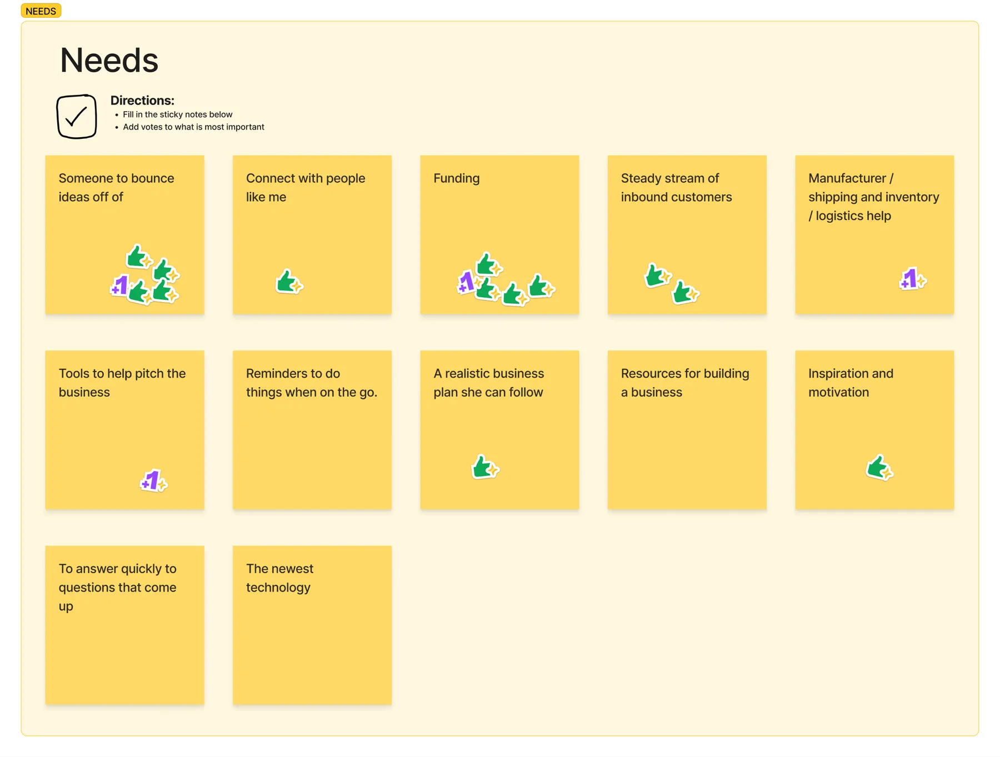
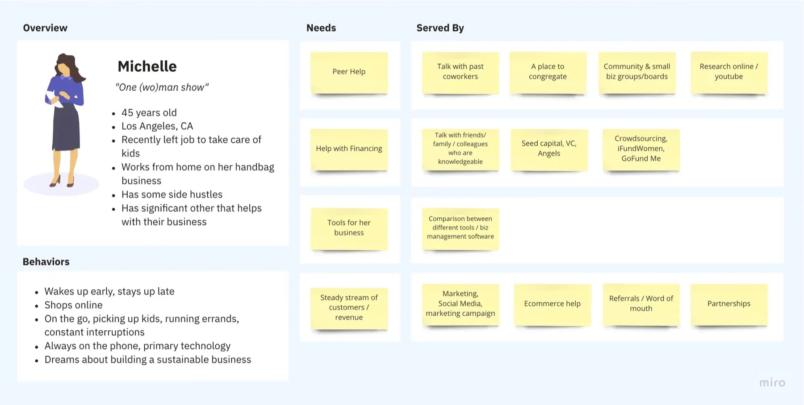
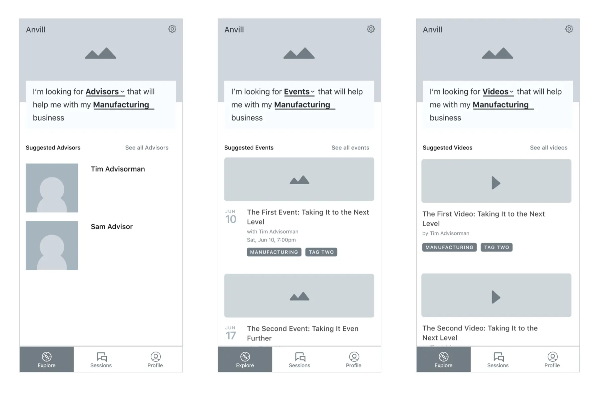
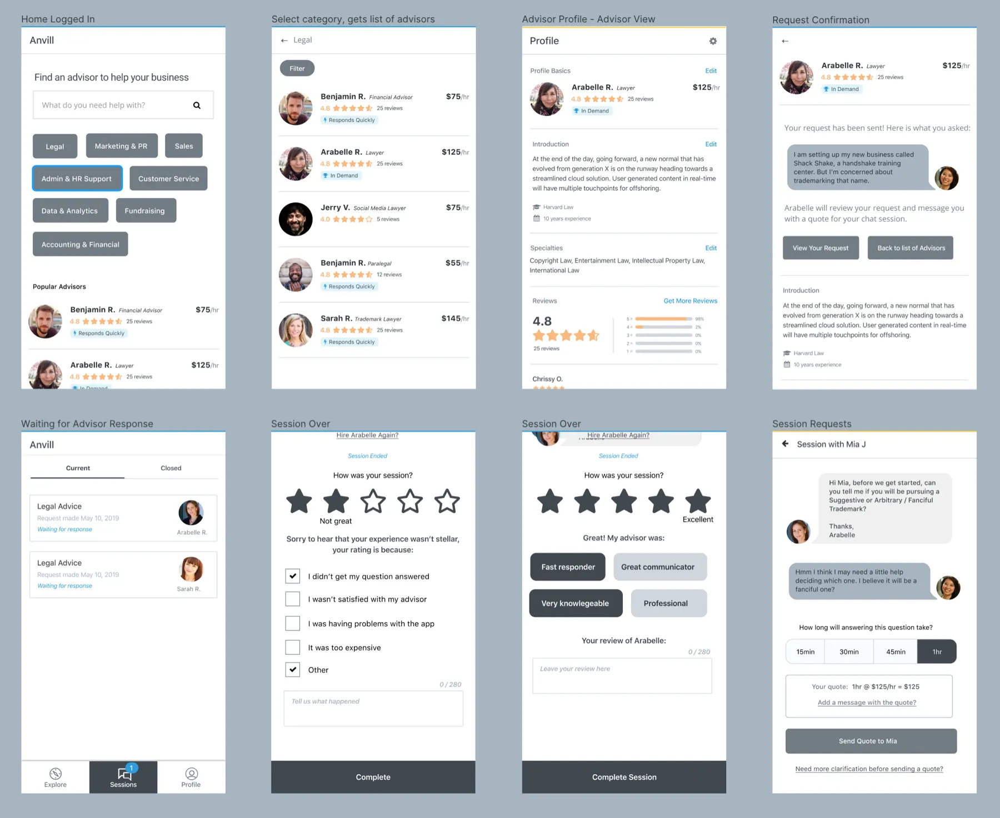
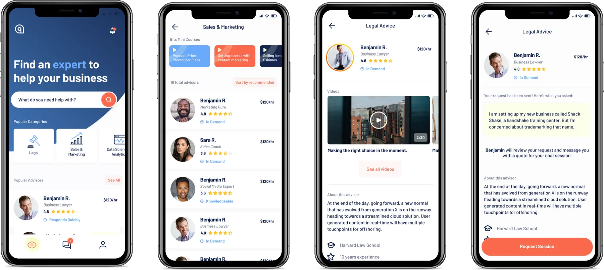
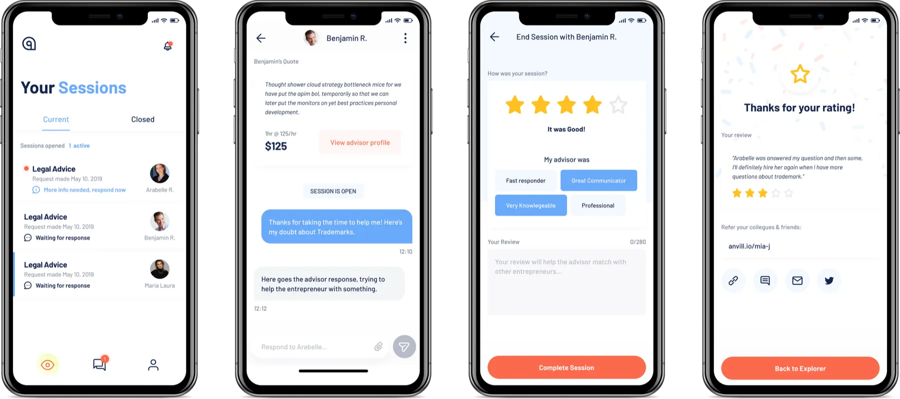

Background
I was hired to design an app for Anvil, an advice platform. We were testing whether up-and-coming entrepreneurs were willing to pay for advice from established entrepreneurs (advisors).
The team was small: a product owner, a product manager, an engineer, and me as design lead. We ran workshops and feedback sessions with potential customers, with the goal of a concise MVP we could use to test the market.

Personas
Working with a panel of users, we created a few highly engaging personas. Nailing these down let us move on to iteration and testing.

Version 1
We assumed entrepreneurs wanted events and videos as a companion to advisor content. When we showed the designs to potential users, discovery was poor for both.

Testers who fit our personas were far less interested in discovering content than we expected. We heard the same thing again and again:
“I’m not sure I would use this service for videos, I mainly go to YouTube for that. For events I look at Instagram.”
— Steve, 23
We did see real interest in seeking out advisors, and realized that was where our MVP should start.
Version 2
Version 2 put advisors up front. It used the mental model that customers look for their industry first, because they want a specialist in that industry.

High-fidelity designs
With the MVP confirmed, I worked with another designer to create high-fidelity designs for the new workflows.


Onboarding & launch
I built a working prototype, and we explored how to combine what we learned in our persona work with content snippets to help convert new users.
I also put together an animated prototype to get a feel for watching short consult videos, with a clear path to take action and become a user.
Results
Metrics six months after launch:
Anvil eventually evolved into a video and advice platform called Embark.